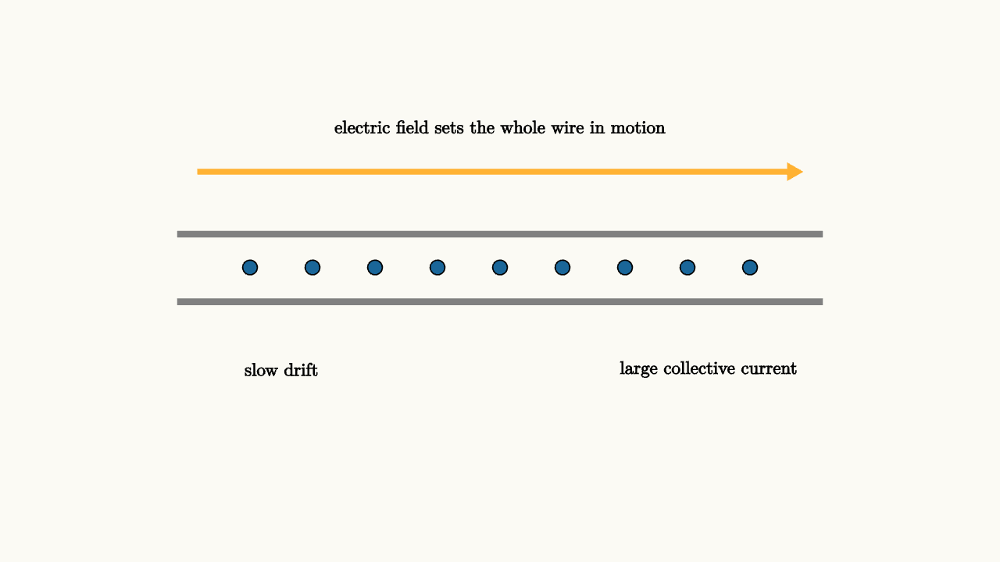

Current Is Charge Flow With A Speed Limit
Imagine placing an invisible gate across a wire and counting charge as it crosses. If one coulomb crosses in one second, the current is one ampere:
That definition is simple, and it hides the part that surprises almost everyone at first. In a metal, the individual electrons drift slowly. A typical drift speed can be fractions of a millimeter per second. The lamp still turns on almost immediately because the electric field rearranges throughout the circuit very quickly, setting many charges in motion together.
A useful picture is a long hallway filled shoulder to shoulder. If someone pushes at one end, the person at the far end can move almost at once, even though no individual person sprinted across the hallway. A circuit behaves more like that crowded hallway than like a few electrons racing from battery to bulb.

source
background = [0.985, 0.98, 0.955, 1]
camera = Camera(4.8b)
let Charges = |shift| block {
. stroke{GRAY, 5} Line(start: [-3.1, -0.2, 0], end: [3.1, -0.2, 0])
. stroke{GRAY, 5} Line(start: [-3.1, 0.45, 0], end: [3.1, 0.45, 0])
. color{ORANGE} Arrow(start: [-2.9, 1.05, 0], end: [2.9, 1.05, 0])
. center{[0, 1.48, 0]} Text("electric field sets the whole wire in motion", 0.62)
. fill{BLUE} center{[-2.4 + shift, 0.13, 0]} Circle(0.07)
. fill{BLUE} center{[-1.8 + shift, 0.13, 0]} Circle(0.07)
. fill{BLUE} center{[-1.2 + shift, 0.13, 0]} Circle(0.07)
. fill{BLUE} center{[-0.6 + shift, 0.13, 0]} Circle(0.07)
. fill{BLUE} center{[0.0 + shift, 0.13, 0]} Circle(0.07)
. fill{BLUE} center{[0.6 + shift, 0.13, 0]} Circle(0.07)
. fill{BLUE} center{[1.2 + shift, 0.13, 0]} Circle(0.07)
. fill{BLUE} center{[1.8 + shift, 0.13, 0]} Circle(0.07)
. fill{BLUE} center{[2.4 + shift, 0.13, 0]} Circle(0.07)
. center{[-2.1, -0.85, 0]} Text("slow drift", 0.62)
. center{[2.0, -0.85, 0]} Text("large collective current", 0.62)
}
mesh diagram = Charges(shift: 0.0)
"current in a wire"
play Fade(0.7)The conventional direction of current is the direction positive charge would flow. In metal wires the mobile charges are electrons, so their drift is opposite the conventional current arrow. This convention can feel backward, yet it keeps the equations clean: positive charges pushed by an electric field move along the field, and current density points with the flow of positive charge.
Current density makes this local:
where $n$ is the number of mobile charges per volume, $q$ is the charge of each carrier, and $\vec v_d$ is drift velocity. If the current density is uniform across a wire of cross-sectional area $A$, then
That equation says there are two ways to carry more current. Make the carriers drift faster, or give them a wider road.
Resistance is organized obstruction
Ohm's law is often introduced as
The visual meaning is a little richer. Voltage tells how much energy per coulomb is available. Current tells how much charge per second moves. Resistance tells how much voltage is required to sustain a given current.
For a simple wire,
Long wires have more resistance because charges undergo more scattering along the trip. Wide wires have less resistance because more charge can move side by side. The material constant $\rho$ is resistivity. Copper has low resistivity, nichrome has high resistivity, and a semiconductor can change its resistivity dramatically with temperature, light, or added impurities.
On the microscopic level, resistance comes from collisions with the material's lattice, impurities, and vibrations. The electric field does work on the charges, and repeated scattering passes that energy into the material as thermal motion. This is why a resistor warms up.
Power is voltage times current
If each coulomb gives up $V$ joules while crossing a component, and $I$ coulombs cross each second, then the component receives power
Combining this with Ohm's law gives
These formulas explain why high-current wiring needs care. Double the current through the same resistance and the heat production grows by a factor of four.
source
param current = 0.7
background = [0.985, 0.98, 0.955, 1]
camera = Camera(4.8b)
let Circuit = |current| block {
. stroke{GRAY, 3} Line(start: [-2.6, 0.75, 0], end: [-1.0, 0.75, 0])
. stroke{GRAY, 3} Line(start: [1.0, 0.75, 0], end: [2.6, 0.75, 0])
. stroke{GRAY, 3} Line(start: [-2.6, -0.75, 0], end: [2.6, -0.75, 0])
. stroke{GRAY, 3} Line(start: [-2.6, -0.75, 0], end: [-2.6, 0.75, 0])
. stroke{GRAY, 3} Line(start: [2.6, -0.75, 0], end: [2.6, 0.75, 0])
. fill{alpha{0.20} ORANGE} stroke{ORANGE, 3} center{[0, 0.75, 0]} Rect([1.35, 0.55])
. center{[0, 0.75, 0]} Text("R", 0.72)
. color{BLUE} Arrow(start: [-2.1, -0.75, 0], end: [-2.1 + current, -0.75, 0])
. color{BLUE} Arrow(start: [0.3, -0.75, 0], end: [0.3 + current, -0.75, 0])
. color{RED} Arrow(start: [-0.75, 1.35, 0], end: [0.75, 1.35, 0])
. center{[0, 1.72, 0]} Text("larger current makes heating grow as I^2R", 0.62)
. center{[0, -1.45, 0]} Tex("P = I^2 R", 0.72)
}
"build circuit"
mesh scene = Circuit(current: $current)
mesh note = center{[0, 0, 0]} Text("", 0.62)
play Fade(0.6)
"raise current"
current = 1.45
scene = Circuit(current: $current)
play Lerp(1.2)The slider has a narrow purpose here. It lets you feel that current is a rate, while the scripted slide makes the physical consequence explicit: heat depends quadratically on current.
The lesson to keep
Current counts charge crossing a cut. Voltage supplies energy per charge. Resistance describes the material's response to the electric field. The charges in a wire drift slowly, while the field organizes the motion around the loop quickly.
When a circuit problem feels like bookkeeping, return to the story. The source establishes a field, the field nudges mobile charges, the material resists through scattering, and energy moves from the source into components at the rate $P=IV$.